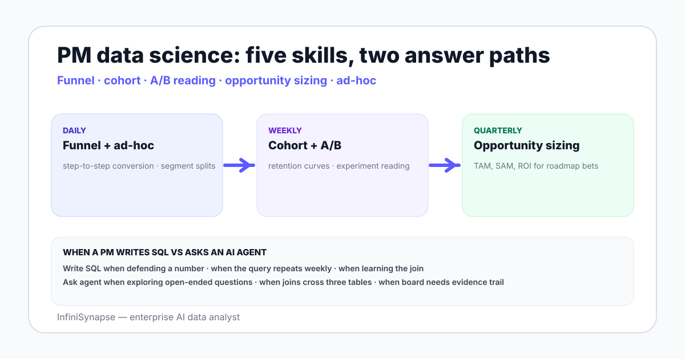

Data Science for Product Managers in 2026: A Working Guide
A working data science guide for product managers in 2026 — funnel, cohort, A/B reading, opportunity sizing, when to write SQL, and when to ask an AI data agent.
AuthorInfiniSynapse Research, product and data architecture team
Published2026-06-28 · Last verified 2026-06-28 · Next review 2026-09-28
Evidence baseProduct analytics vendor documentation from Amplitude and Mixpanel, A/B testing literature (Kohavi et al.), public product management benchmark studies, BLS data scientists occupational outlook, and field experience with PM and data teams.
Disclosure: This page is published by InfiniSynapse, an AI data analyst PMs use to answer questions without filing analyst tickets. The skills checklist and workflow are written to apply whether or not the PM uses our product.
TL;DR
PMs do not need to be data scientists — but the best ones are fluent in five skills: funnel analysis, cohort retention, A/B test reading, opportunity sizing, and ad-hoc data querying.
Funnel analysis is the daily skill — measuring step-to-step conversion, segmenting by user properties, and spotting which step degraded.
Cohort retention is the weekly skill — reading curves to evaluate channel quality, feature impact, and product-market fit signal.
A/B test reading is the most error-prone skill — peeking before significance, reading the wrong metric, ignoring SRM (sample ratio mismatch) are the common failure modes.
In 2026 PMs increasingly use AI data agents to ask warehouse questions without filing analyst tickets — write SQL when the question is yours to defend, ask the agent when the question is exploratory.
A PM needs five data science skills: funnel analysis, cohort retention, A/B test reading, opportunity sizing, and ad-hoc data querying. Funnel is daily, cohort is weekly, A/B reading is the most error-prone, opportunity sizing is the rarest but highest-stakes. Write SQL when the question is yours to defend; ask an AI data agent when the question is exploratory or cross-source.

The five PM data science skills, ranked by use frequency
Curves by signup or feature cohort, lifetime trends
A/B test reading
Weekly–monthly
Significance, power, SRM, metric choice, peeking
Ad-hoc data querying
Weekly
SQL or AI-agent-driven exploration of warehouse data
Opportunity sizing
Quarterly
Market sizing, TAM/SAM, ROI estimation for a roadmap bet
The frequency ranking is what to invest in first — funnel and cohort beat A/B test reading on the volume curve, but A/B test reading is the most expensive to do badly.
Funnel analysis the PM way — what to ask, what to ignore
Funnel analysis answers "where do people drop off". For PMs, three questions matter:
Which step has the biggest absolute drop? The bottleneck is usually the step that loses the most users in absolute count — not the step with the lowest percentage conversion.
Does the funnel shape change by segment? Mobile vs desktop, country, channel, time of day. A flat overall funnel often hides a fixable segment-specific drop.
Did the drop change over time? Compare last week to the same week four weeks ago. A new drop is more actionable than a permanent one.
What to ignore: vanity conversion rate published by competitors. Funnels are defined differently across products; cross-product comparison is mostly noise. The most useful comparison is your funnel against your funnel last quarter.
Cohort retention reading — three traps
A cohort retention curve plots the share of a signup cohort still active at week N. Three reading traps to avoid:
The curve flattens — declare PMF too early. Curves flatten because the worst users have churned. Look at absolute counts, not just percentages.
Compare cohorts at different ages. A 2-month-old cohort is not comparable to a 12-month-old cohort. Align week-N for week-N.
Conflate signup cohort with feature cohort. "Users who first used feature X" is a feature cohort. "Users who signed up in March" is a signup cohort. They answer different questions.
The PM job is reading the curves, not generating them. The data team produces the curves; the PM defends the interpretation in the roadmap conversation.
A/B test reading without misreading — the four common failures
Failure mode
What happens
Fix
Peeking before significance
Stopping at the first "p < 0.05" inflates false positives
Pre-register sample size; use sequential testing if you must peek
Sample Ratio Mismatch (SRM)
Treatment/control split deviates from 50/50; randomization is broken
Always check the assignment split before reading the metric
Wrong primary metric
"It moved a downstream metric" tempts after-the-fact metric switching
Pre-commit the primary metric; secondary metrics are diagnostic only
Novelty effect
Treatment lift in week 1 reverses by week 4 as users adjust
Run long enough to cover the adjustment period
The PM does not run the math — the data team does. The PM owns the test design and the post-test decision. The literature to start with is Ron Kohavi's experimentation platform research; the failure modes above are documented there in painful detail.
When a PM should write SQL vs ask an AI agent
Scenario
Write SQL
Ask the AI agent
You are defending a number to the team
Yes — own the query
—
You are exploring an open-ended question
—
Yes — agent drafts, you read
The question crosses 3+ tables
—
Yes — agent handles the joins
You will repeat this query weekly
Yes — turn it into a saved dashboard
—
You need an evidence trail for the board
—
Yes — agent returns plan + SQL + verification
You are learning what a join looks like
Yes — typing it is the lesson
—
The rule of thumb: SQL is the PM skill that survives the AI shift, but the daily volume of ad-hoc questions a PM produces is exactly what an AI data analyst handles fastest. PMs that pair the two ship more.
The tools a PM actually needs
Product analytics (one). Amplitude, Mixpanel, PostHog, or Heap. The default surface for funnel and cohort questions.
Warehouse access. Read-only credentials to Snowflake, BigQuery, Redshift, or Postgres. Not optional — the warehouse is the source of truth for the questions product analytics cannot answer.
A BI tool. Looker, Metabase, Tableau, Power BI, or Hex. Where saved analyses live.
An A/B testing platform. Statsig, Optimizely, GrowthBook, or LaunchDarkly. The default surface for experimentation.
An AI data agent. The ad-hoc question pile a PM produces is exactly what an AI data agent handles — connect read-only and ask in plain English.
A spreadsheet. For opportunity sizing, ROI estimates, and one-off chart polish for a deck.
A PM that can read a funnel, read a cohort, read an A/B test, and ask an agent has 80% of the data science skill the job requires.
Ask a PM-shaped question across your product warehouse
Connect Snowflake, BigQuery, Postgres, or the warehouse where your product events land. Seed a small business glossary of event names and metric definitions. Then ask one open-ended product question and review the plan, SQL, and verification step.
What data science skills should a product manager have?
Five skills ranked by frequency: funnel analysis (daily) for step-to-step conversion and drop-off diagnosis, cohort retention (weekly) for reading curves by signup or feature cohort, A/B test reading (weekly to monthly) for understanding significance and avoiding common pitfalls, ad-hoc data querying (weekly) via SQL or an AI agent, and opportunity sizing (quarterly) for market sizing and ROI estimation on roadmap bets.
Do product managers need to know SQL?
Yes for the questions you defend yourself — the SQL you can read and re-derive in a meeting is the SQL you can be challenged on. No for every open-ended ad-hoc question — that work shifts to AI data agents in 2026 because the volume of questions a PM produces exceeds what a PM can type. The pair-up is the modern shape: SQL fluency for defendable analysis, agent for exploration.
How should a PM read an A/B test result?
Avoid four common failures: peeking before reaching the pre-registered sample size, which inflates false positives; sample ratio mismatch where treatment and control deviate from 50/50 signaling broken randomization; switching to a downstream metric after the test runs; and reading week 1 lift that reverses by week 4 due to novelty effects. Always check the assignment split before reading the primary metric.
How do AI data agents help product managers?
The daily volume of ad-hoc questions a PM produces — anomaly spikes, cohort comparisons, segment breakdowns, cross-table joins — is exactly what AI data agents handle fastest. Connect the agent to your warehouse read-only, seed a small business glossary of event names and metric definitions, and ask in plain English. The agent returns a plan, SQL, result, and verification step the PM can defend or push back on.
What is the difference between funnel analysis and cohort retention?
A funnel measures step-to-step conversion within a single session or short window — how users move from session start to a target event. A cohort retention curve measures the share of a group of users (typically a signup cohort) still active at week N. Funnel diagnoses where users drop off in a flow; cohort retention diagnoses whether the product has lasting value for users who arrive.
What tools should a PM use for data analysis?
Six tools cover most PM data work: a product analytics platform like Amplitude or Mixpanel or PostHog or Heap for funnel and cohort questions, warehouse read-only access to Snowflake or BigQuery or Postgres for source-of-truth questions, a BI tool like Looker or Metabase or Tableau for saved analyses, an A/B testing platform like Statsig or Optimizely or GrowthBook, an AI data agent for ad-hoc questions, and a spreadsheet for opportunity sizing.
When should a PM write SQL versus ask an AI agent?
Write SQL when you are defending a number to the team, when the query will repeat weekly and deserves a saved dashboard, and when you are learning what a join looks like and the typing is the lesson. Ask the AI agent when the question is exploratory, when it crosses three or more tables, and when you need an evidence trail with plan plus SQL plus verification step for a board or stakeholder review.
Methodology and review notes
Last updated: 2026-06-28 · Next scheduled review: 2026-09-28
This skills guide synthesizes product analytics vendor documentation from Amplitude and Mixpanel, A/B testing research from Ron Kohavi and the Microsoft Experimentation Platform team, public product management benchmark studies, the BLS data scientists occupational outlook, and field experience with PMs and data teams across SaaS and consumer products. The five-skill ranking and SQL-vs-agent rubric reflect observed practice across PM organizations.
Conflict of interest: InfiniSynapse publishes this guide and sells an enterprise AI data analyst. To reduce bias, the page leads with the topic itself, treats InfiniSynapse as one option among many, and links to external sources for every numeric claim.
Update cadence: Reviewed every 90 days for accuracy and link health.